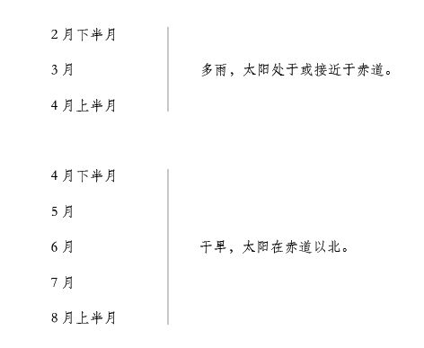
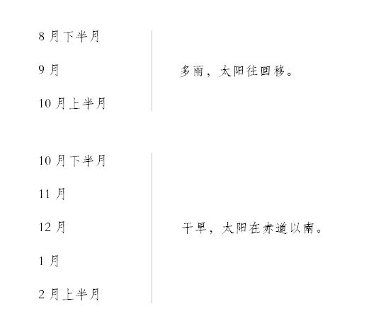

我在这个不幸的岛上业已十月。由此困境中获救的一切可能性似乎都没有，我坚信这里也从来没有人类踏上过。我觉得，我既已安居下来，就该对这个岛有更深入的了解，看看能不能找到我尚未发现的别的物产。
我是在7月15日开始更为彻底地巡视岛屿的。我先上到小河那里，就是当初我划着木筏上岸的地方。我溯河走上两英里远后，发现海潮就没有了，小河成了一条潺潺流动的小溪，水质清新，口感良好。不过现在正逢旱季，小溪的某些段落几乎枯了水 — 至少没有流动了，看不出有溪水。
在这条小溪的两岸，我发现了一片片令人心旷神怡的草地，平坦而顺滑，绿草如茵。在这些草地紧靠着高地的部分 — 可想而知溪水不会漫到那里 — 我发现了一大片烟叶，绿油油的，茎秆强壮。那里还分布着别的我不认识的植物，也许各有各的用处，只是我不知道罢了。
我寻找着木薯根，那是印第安人一年四季用来做面包的作物，但一根也没找到。我看到了大芦荟，但当时认不出来。我看到了几根甘蔗，却是野生的，未经人工栽培，并不好吃。我对这次的发现很满意，就回来了，一路上琢磨着怎么了解我发现的这些植物或果实的性质和用处，可是却没有头绪。总之，因为我在巴西很少观察，我对地里的植物所知甚少。至少，对那些现在可在我不幸处境中派上用场的植物所知甚少。
次日，16日，我走上了同一条路，到了比昨天远点的地方，发现小溪和草地到了尽头，地上的树木比前面茂密。在这里我找到了不同的果实，特别是在地上发现了大量甜瓜，在树上看到了葡萄。葡萄藤爬满了林子，一串串葡萄又大又红。这是一个惊人的发现，我高兴坏了，但是经验告诉我，不要吃得太多。我记得，当初我在巴巴里 注16 上岸时，几个在那里当奴隶的英国人因为吃葡萄而害痢疾，发高烧，丧了性命。不过，我还是想出了一个利用这些葡萄的好办法，把它们在太阳下晒干，制成葡萄干存放起来。这样一来，在没有葡萄的季节，我也能吃上又有营养又可口的葡萄干。事实也确实如此。
我那晚就待在那里了，没有回我的住所。顺便说一句，这还是我第一次离开家在外面过夜。在晚上，我采用了我最初的办法，爬到树上好好地睡了一觉。次日早上，我又继续我的发现之旅。我走了将近四英里，这是我从山谷的长度判断的。我一直是在朝北走，我南面和北面都是一道连绵起伏的山脊。
在这次远足的最后，我来到一片开阔地，这里地势似乎向西倾斜。一小股清泉从我这侧的山边发出，流到另一边，也就是东边。这片土地看起来如此清新，如此翠绿，如此欣欣向荣，万物都是一派春天的气息，看起来就像是一个人工花园。
我顺着那个怡人的溪谷旁边往下走，带着一股隐秘的喜悦打量着它，也夹杂着痛苦地想，这都是属于我自己的，我是这里无可争辩的国王和主人，拥有所有权。如果我可以转让它的话，我兴许会把它传给子孙，就像英国采邑的领主一样。我在这里看到了大量的椰子树、橘子树、柠檬树和香橼树，但都是野生的，很少结果，起码那时还没有结果。不过我摘到的酸橙不仅好吃，还很有营养。后来我把它们的汁跟水掺在一起，不仅富有营养，还很清凉提神。
现在我发现要做许多采集和搬运的工作。我决定储存一些葡萄、酸橙和柠檬，以备雨季之用。雨季快要到了。
为了做到这一步，我在一个地方采摘了一大堆葡萄，在另一个地方采摘了一小堆葡萄，又在另一个地方采集了一大包酸橙和柠檬。我每一样都随身带了一点，就往家里走去。我打定主意再来，带上个大袋子什么的，把剩下的都带回家。
我在路上走了三天才到家（现在得叫帐篷或洞室了），但在此之前葡萄早就烂了。葡萄长得粒粒饱满，汁水又多，一碰就破，因此没办法吃了。至于酸橙倒是不错，可是我带不了几个。
次日是19日，我带着两只小袋子回来，想把我收获的果实装回家。但我吃了一惊。当我走到那堆葡萄跟前时，昨天我摘下它们时还又大又好，现在却一片狼藉，有的被踩烂，有的被拖开，东一点，西一点，很多都已被吃掉。我由此推测，是附近的野兽干的，但到底是什么野兽我就不知道了。
我发现把葡萄采摘下来堆在一起不是办法，用袋子装回去也不是办法，前一种办法会让葡萄被野兽糟踏掉，后一种办法会让葡萄被压碎。我只得采取另一种办法。我采摘了大量的葡萄，将它们挂在伸得较远的枝头上，让它们被太阳晒干。至于酸橙和柠檬，我能背得动就多背一些回来。
这次出门回来后，我一想到那山谷果实累累，风景怡人，就满心高兴。那里靠近溪流和树林，不怕风暴来袭。我得出结论，我选来作为自己住所的地方，实在是全岛最糟糕之处。总之，我开始考虑搬家，打算只要可能，就去岛上那个富饶怡人的地带找一个跟这里一样安全的地方安家。
这个想法长久地萦绕在我脑海里，有一段时间我特别迷恋它，那个怡人的地方诱惑着我。但是，当我仔细想时，却觉得我现在住在海边，至少还有可能遇上对我有利的事，说不定还会有一些别的倒霉蛋像我一样，被恶运带到了这同一个地方。尽管这样的事不太可能发生，但把自己封闭在岛中央的高山密林中，却注定作茧自缚，不仅会使这样的事不太可能发生，而且是绝对不可能发生了。所以，我断断不可搬家。
不过，我对这个地方是如此迷恋，以致7月剩下的时间我都在那里度过了。尽管经过反思我决定不搬，却还是给自己搭了一个小屋，在它不远处围上了一道结实的篱笆。这篱笆由两排树篱构成，有我伸手那么高，里面塞满了枝枝杈杈。我在这里睡得很安全，有时连待两三晚。至于进出，我也总是用梯子。这样，我就觉得现在我有了两个房子，一个在乡间，一个在海边。乡间这座房子我到8月初才建好。
我刚刚扎完篱笆，正要享受劳动成果，雨就来了，把我困在了旧居里，没法出门。因为，尽管我在新居也用一片帆布扎起了一个帐篷，并且把它撑开了，却没有小山可以遮风挡雨，也没有山洞在大雨倾盆时作为后路。
如我所说，大概在8月初，我建好了茅舍，准备享受一番。8月3日，我发现我挂在树枝上的葡萄已完全晒干了，当真成了上等的葡萄干。于是我动手把它们从树上拿下来，我庆幸自己这么做了，不然的话，后来的大雨会把它们毁了，我就会失去冬天最好的食物。因为我挂了两百多串，每串都很大。我刚把它们全都取下来，把大部分都运到山洞里，就开始下雨了。从那时开始，到8月14日，一直在下雨，或大或小，每天都在下，直到10月中旬才住了。有时雨势汹汹，我一连几天都无法出洞。
在这个雨季里，我为家庭成员的增多感到吃惊。我曾经少了一只猫，它可能是逃走了，也可能是死了，我得不到它的任何消息，心里十分牵挂。令我颇为意外的是，它在8月底回来了，带回了三只小猫。这令我更觉奇怪，因为，尽管我曾经用枪杀死一只我所谓的野猫，我却认为这种野猫的品种跟我们欧洲的猫是完全不同的。但小猫却跟老猫一样是家养的品种。我的两只猫都是雌的，因此，我觉得这件事颇为出奇。不过，后来这三只小猫繁衍了许多后代，闹得我烦不胜烦，我不得不把它们像害虫或野兽一样杀掉，尽可能地把它们从我屋里赶走。
从8月14日到26日，雨一直不歇，我不能出洞，我很小心，不让自己淋湿。因为一直困在屋里，粮食开始短缺。我出去了两次，有一天杀死了一只山羊，最后一天即26日发现了很大一只海龟，使我大快朵颐。我的食物这样分配：早餐我吃一串葡萄干；午餐我吃一块山羊肉，或一块海龟肉，都是烤了吃，因为我很不幸，没有容器蒸煮食物；晚餐是两三个海龟蛋。
在我被雨困在山洞期间，我每天都工作两三个小时，把洞挖大，一点一点地向一边延伸，直到通向山外，成了一道门或出路，它已经在我的篱笆或围墙之外了，因此我可以由此出路进进出出。但我对睡觉时这样无遮无拦不太放心，因为在以前我是把自己封闭起来的，而现在我却无遮拦地躺着，向外面敞开着，任何东西都可以来袭击我。不过，我也没有觉得有什么动物要怕，我在这座岛上见到的最大的动物不过是山羊而已。
9月30日。今天是我在此登陆一周年的不幸日子。我把柱子上的刻纹计算了一下，发现我上岸已有365天了。我把这天定为一个庄严的斋戒日，专门用来做宗教仪式，我以最谦卑的态度匍匐在地，向上帝忏悔我的罪恶，接受他对我公正的审判，祈求他借着耶稣基督怜悯我。我整整十二小时都未进食，直到太阳落山，我才吃了一块饼干和一串葡萄干，然后上床睡觉，有始有终地结束了这一天。
我这段时间都没有守安息日。起初，我脑子里没有宗教感，后来一段时间，我忘了把安息日刻成长纹来区别周数，因此就搞不清哪天是哪天了。但是现在，我计算了一下天数，知道已经来这里一年了，因此我就分出周数，每七天分出一个安息日。算到最后，我发现漏掉了一两天。
不久后，我的墨水快用完了，就只好省着用，只记些生活中最重要的事，而不再巨细无遗地什么都记下来。
现在，雨季和旱季在我看来有规律了，我学会了划分它们，并为此做好相应的准备。我为此交出了不菲的学费，下面我要讲述的事情，就是我所有试验中，最令人沮丧的一次。
我上面提到过，我收藏了几颗麦穗和稻穗，当初我还以为它们是凭空萌发出来的，因此曾大为吃惊。我估计稻穗约有三十颗，麦穗约有二十颗。现在雨水已过，太阳逐渐移到了南方，我以为是适合播种的时节，就尽量地用木铲松了一块地，将它分成两部分，把种子播了下去。但在播种时，我偶然想到，不能一下子全部播下了，因为我并不知道时间是否合适，因此我只是播了三分之二的种子，每样还留了一把。
后来我庆幸这么做了，因为我这次播下的种子没有一棵发芽的。因为随后数月天气干燥，地里没有雨水滋润，不能帮助种子生长，所以播下的种子一直长不出来。一直到雨季重临，它们才冒出头来，仿佛是新播下去似的。
发现第一批种子不长，我很容易就想到这是由干旱导致的，就找了一块湿润的土地做另一场试验。我在新房附近松了一块地，在二月份春分的前几天，把剩余的种子播了下去。这批种子有多雨的三四月来浇水，就快乐地发芽抽条，结出了一片好庄稼。不过由于我只有一部分种子，而且还不敢全部都播下去，因此最后我收获的量不多，每种的收成只有半配克 注17 而已。
不过通过这次试验，我成了种田的里手，准确地知道了何时是适合播种的季节，并且知道了一年有两次播种季节，可以收获两次。
这批庄稼生长的时候，我有了一个小小的发现，此后对我很有用。大约十一月，雨季一过，天气开始转晴时，我到我的乡间茅屋去了一趟。尽管我已数月未去，一切东西却依旧如故。我修筑的围墙或双重篱笆不仅结实完整，而且我从附近树上砍下的那些木桩业已发萌抽条，就跟柳树在剪枝的来年会怒发一样。我说不出这些木桩是从什么树上砍下来的。我惊讶又高兴的是，看到幼树长大了。我把它们修剪了一番，尽可能让它们长得一般齐。三年后，这些树长得那么优雅，简直令人难以置信。尽管篱笆的直径长达二十五码，那些树（现在我可以这样称呼它们了） 却很快就把它遮掩住了。它完全成了一片绿荫，整个旱季待在里面十分舒服。
这令我决定再砍一些木桩，再做一个这样的树篱，围着围墙构成一个半圆形 （我是指第一个住处） ，我就这么做了。在第一道围墙外约八码的地方，我种了两排树或木桩。它们长得很快，一开头是我住所很好的遮盖物，随后又成了一道防御工事。关于这些我后面再谈。
现在我发现，这里一年的季节不应该像欧洲那样分为夏季和冬季，而是应该分为雨季和旱季。情况大致是这样的：


雨季有时长，有时短，就看风怎么刮了，这不过是我观察到的大致情况。在我凭经验发现淋雨的严重后果后，就注意未雨绸缪，备好粮食，免得下雨天还要外出。在雨季，我都尽可能地待在屋子里。
在这段时间里，我发现有许多事情要做，也适合在这个时间做，因为我发现我还缺乏很多生活用品，只有凭着艰苦的劳动，持之以恒才能做出来。我特别想做一个箩筐，但我弄来的所有的枝条都太脆，什么也做不了。这时我小时候的经历派上了用场。我还是一个小男孩的时候，喜欢站在城里藤器店门口看藤匠编东西，像小男孩通常的那样，我也爱管闲事，不仅仔细观察，还不时帮上一手，因此对编法颇为熟悉。现在我缺的只是材料了。我忽然想到，我砍来做木桩仍能抽条的那种树枝，也许跟英国的柳树一样坚韧，我决定拿来一试。
第二天，我来到我所说的乡间居所，砍了些小枝子，发现很适合我的目的。下次来我就带了一把小斧，砍下更多的枝条，因为我发现那边可真不少。我把它们放在围墙或树篱里面晾干，合用时再搬到洞里来。在下一个季度，我就尽我所能地编了一大堆箩筐，既可运土，也可载物，随我所便。尽管做得不算好看，却能各有所用。后来我留意着不让箩筐缺乏，旧的坏了就编新的，特别是编了一些又深又结实的箩筐来装谷物。我原先是用袋子装谷物的，但现在谷物太多了。
花了大量时间克服这一困难之后，我又动手尝试，看能否再满足两个需要。我没有盛放液体的容器，只有两只快装满了甘蔗酒的小桶，以及一些玻璃瓶— 其中有的是寻常大小，有的是方形的，用来装酒水。我也没有锅可用来煮东西，只有从船上扒来的一个大壶，但它太大了，不适合烧汤煮肉。我想要的第二个东西是一个烟斗，但自己也不可能做出来。不过最后我还是想出了一个法子。
在整个夏天或旱季，我都在忙于栽第二排木桩，用枝条编东西。与此同时我在做另一件事，花费的时间比预想的要多得多。
注16 埃及以西的北非穆斯林地区。
注17 等于8夸脱或2加仑。